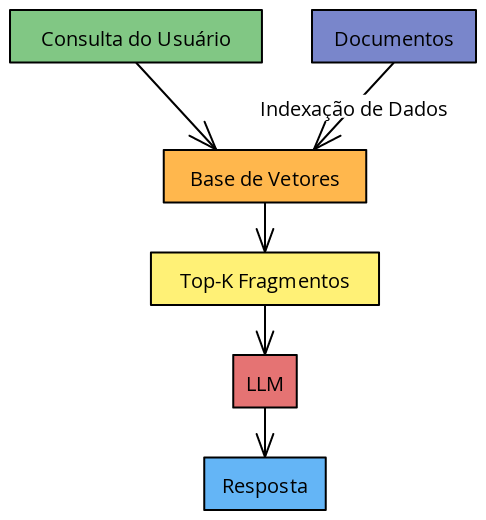
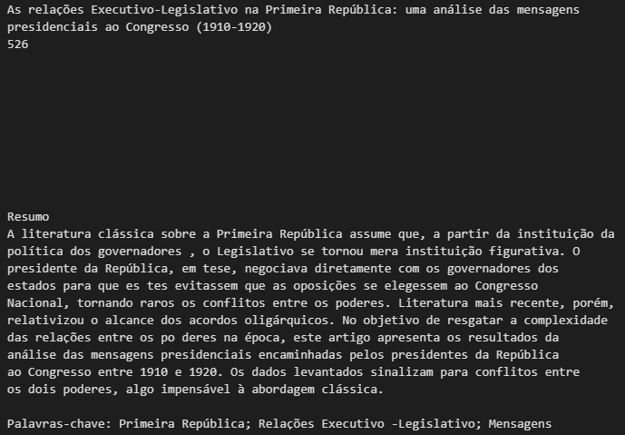

RAG pipelines: o que são e como construí-los
Neste artigo, discuto o conceito de Retrieval-Augmented Generation (RAG). Através de um exemplo prático com o LlamaIndex e a API da OpenAI, demonstro como RAG permite gerar respostas mais precisas, incorporando contexto específico a modelos fundacionais já existentes.
Introdução
Hoje em dia temos acesso uma quantidade razoavelmente extensa de Large Language Models disponíveis para uso, como os oferecidos pela OpenAI, Meta, Anthropic e xAI. Essas redes neurais “grandes”, normalmente caracterizadas dessa maneira em função do enorme número de parâmetros estimados durante o processo de treinamento, são frequentemente chamados de foundation models. Tratam-se de modelos treinados em quantidades massivas de dados e que, no fim das contas, servem de base para uma série de aplicações de naturezas distintas, como geração de texto, tradução automática, sumarização, etc.
É verdade, no entanto, que esses modelos podem não ser capazes de, por si só, lidar com tarefas mais específicas. Por exemplo, suponha que queremos responder a perguntas sobre os dados de uma determinada empresa, um conjunto específico de artigos ou discursos… enfim, qualquer coisa do gênero. Como esses modelos são generalistas por natureza, eles provavelmente não serão capazes de fornecer respostas específicas o suficiente para os nossos objetivos. Além disso, os modelos são treinados com dados de até uma determinada data, o que significa que eles podem não ser capazes de fornecer detalhes sobre eventos mais recentes.
Nesse caso, existem duas abordagens principais que podemos seguir: (i) fine-tuning, que consiste essencialmente em ajustar os parâmetros dessas redes neurais usando um conjunto de dados mais específico; e (ii) RAG pipelines, em que combinamos os modelos de linguagem com bases de conhecimento próprias, oferecendo contextos mais específicos para a geração de respostas.
A abordagem de fine-tuning, apesar de eficaz, pode ser muito custosa, especialmente se levarmos em consideração que dependemos de conjuntos de dados grandes o suficiente para fazer alguma diferença no desempenho do modelo. Por isso, RAG pipelines podem ser uma alternativa preferível e mais simples em vários casos.
Tenho trabalhado com alguma frequência com RAG pipelines nos últimos meses e já apliquei essa abordagem em projetos de naturezas bastante distintas – por exemplo, desde responder perguntas sobre bases de dados em SQL até a construção de chatbots para responder perguntas sobre documentos em PDF. Neste post, meu objetivo é explicar o que são RAG pipelines e como construí-los, utilizando um exemplo prático com o LlamaIndex e a API da OpenAI.
O que são pipelines de RAG e para que servem?
RAG significa Retrieval-Augmented Generation. Em termos simplificados, estamos basicamente inserindo um contexto mais específico para a geração de respostas de um modelo de linguagem. A expectativa é que, dado o contexto necessário, o modelo seja capaz de gerar respostas mais adequadas para a tarefa em questão.
Pense na situação em que você trabalha em uma empresa que possui uma série de documentos em PDF com diretrizes de atuação dos funcionários. A maneira mais trabalhosa de responder perguntas a respeito de cada um deles seria, é claro, ler cada documento e tirar conclusões a partir da leitura.
Por outro lado, poderíamos construir um esquema de conversação de um chatbot com esses documentos para facilitar a recuperação de informações. Pense que o funcionário pode ter recebido um e-mail de um endereço suspeito e quer saber, com certa rapidez, qual é a medida que ele deve tomar em seguida.
É claro, o funcionário poderia ler os documentos e procurar a diretriz de atuação definida. Ele também poderia fazer uma pergunta para o ChatGPT e receber uma resposta razoável com diretrizes gerais de segurança da informação. Mas, se você alimenta um modelo modelo com as diretrizes da sua própria empresa, a resposta será muito mais efetiva e rápida. É isso que um RAG faz: ele informa ao modelo de linguagem quais partes desses documentos são mais relevantes para as suas perguntas, permitindo que ele gere respostas mais precisas.
A ideia de embedding é central para a construção desse tipo de pipeline. Grosso modo, um embedding é uma representação numérica de um texto — muito útil porque, além de permitir a realização de cálculos matemáticos, também é capaz de incorporar a semântica (isto é, o significado) do texto.
No caso do RAG, esses embeddings são utilizados para calcular a similaridade entre o texto de entrada – ou seja, a sua pergunta – e os documentos que servirão de contexto para a geração de respostas. Com isso, podemos identificar quais partes desses documentos são mais relevantes para a pergunta e, a partir daí, alimentar o modelo de linguagem com essas informações.
A imagem abaixo é uma representação visual de um pipeline de RAG:

Bom, isso é o RAG! Na realidade, se utilizarmos ferramentas como o LlamaIndex, podemos construir esses pipelines de maneira razoavelmente simples.
A seguir, vou mostrar uma implementação de um RAG integrando modelos oferecidos pela OpenAI com o LlamaIndex. Embora o exemplo seja bastante simples, a ideia é que ele possa ser facilmente adaptado para outras tarefas.
Aplicação com LlamaIndex e API da OpenAI
Usando os termos do LlamaIndex1, nossos documentos são ingeridos por containers da classe Document, que são compostos por Nodes — cada um deles guardando parte do documento em questão. A última etapa é gerar os embeddings do texto nesses Nodes e, a partir daí, podemos calcular a similaridade entre eles e o texto de entrada.
Como exemplo, vamos testar fazer perguntas sobre a opinião de parlamentares brasileiros a respeito da reforma tributária. Como contexto, vamos utilizar esse documento fornecido pela Câmara dos Deputados com 23 discursos de parlamentares sobre o tema ao longo do mês de março de 2021: [link].
Primeiro, vamos perguntar para o ChatGPT (mais especificamente utilizando o modelo gpt-4o) sobre a opinião dos parlamentares a respeito da reforma tributária, sem fornecer nenhum contexto adicional. Depois, vamos fazer a mesma pergunta no contexto de um pipeline RAG, onde o modelo de linguagem será alimentado com o documento que comentei.
Bom, vejamos como isso funciona na prática. Primeiro, vamos fazer a pergunta para o ChatGPT:
import os
import openai
os.environ["OPENAI_API_KEY"] = "sua_chave_de_api"
openai.api_key = os.environ["OPENAI_API_KEY"]
client = openai.OpenAI()
response = client.chat.completions.create(model="gpt-4o-mini",
messages=[{"role": "user", "content": "Qual era a tônica das relações Executivo-Legislativo na Primeira República? Responda em um parágrafo curto."}],
temperature=0,
)A resposta que obtemos é a seguinte:
Na Primeira República Brasileira (1889-1930), as relações entre o Executivo e o Legislativo foram marcadas por um forte clientelismo e uma política de alianças, onde o presidente buscava apoio no Congresso Nacional para garantir a governabilidade. O sistema político era dominado por oligarquias regionais, especialmente de São Paulo e Minas Gerais, que exerciam grande influência sobre as decisões legislativas. A prática do “coronelismo” e a troca de favores entre os políticos eram comuns, resultando em um Executivo que frequentemente se via dependente do Legislativo para a aprovação de suas propostas. Essa dinâmica, por sua vez, gerou instabilidade e crises políticas, culminando na Revolução de 1930, que pôs fim à Primeira República.
Conforme o esperado, ela reforça a interpretação clássica sobre o período e sequer menciona visões mais recentes. Agora, vamos testar fazer a mesma pergunta a um pipeline que integra o meu artigo.
Primeiro, vamos carregar as bibliotecas:
import os
from llama_index.core import VectorStoreIndex, SimpleDirectoryReader, Settings
from llama_index.embeddings.openai import OpenAIEmbedding
from llama_index.core.retrievers import VectorIndexRetriever
from llama_index.llms.openai import OpenAIAgora, vamos definir os modelos que serão utilizados — tanto o modelo responsável por dar a resposta quanto o modelo que será utilizado para mapear os textos em embeddings:
# define o modelo de geracao de texto
model = OpenAI(
model="gpt-4o-mini",
temperature=0.0,
api_key=os.environ["OPENAI_API_KEY"],
)
# define o modelo de embedding
Settings.embed_model = OpenAIEmbedding(model="text-embedding-3-small", api_key=os.environ["OPENAI_API_KEY"])Depois disso, lemos os documentos (neste caso, apenas um artigo guardado numa pasta documents), criamos o índice e definimos uma query_engine, responsável por recuperar as partes dos documentos que são mais similares ao texto de entrada:
# carrega os documentos no diretorio
documents = SimpleDirectoryReader(input_dir='documents').load_data()
# cria o index
index = VectorStoreIndex.from_documents(documents)
# cria a query_engine
query_engine = index.as_query_engine(
similarity_top_k = 1,
llm=model,
)Note que, nesse código em particular, estou utilizando o similarity_top_k = 1, o que significa que a query engine irá recuperar apenas o nó mais similar ao texto de entrada e passar esse nó para o modelo de linguagem, que vai incorporar esse contexto na geração da resposta.
Minha expectativa é que, feita a mesma pergunta, o modelo seja capaz de oferecer uma resposta mais específica, que leve em consideração a literatura mais recente sobre o tema. Vamos ver o que acontece:
# faz a query ao modelo
response = query_engine.query("Qual era a tônica das relações Executivo-Legislativo na Primeira República? Responda em um parágrafo curto.")A resposta que obtemos é a seguinte:
A tônica das relações Executivo-Legislativo na Primeira República era marcada pela percepção de que o Legislativo se tornava uma instituição figurativa, com o presidente negociando diretamente com os governadores para evitar a eleição de opositores ao Congresso Nacional. No entanto, análises mais recentes indicam que havia conflitos entre os dois poderes, desafiando a visão clássica sobre a dinâmica dessas relações.
De fato, o resultado é exatamente o esperado. A resposta do modelo incorpora o contexto do artigo, que argumenta contra a visão clássica sobre a relação entre Executivo e Legislativo na Primeira República.
Uma característica útil desse pipeline é que conseguimos, além da resposta, identificar quais informações foram inseridas como contexto. Nesse caso em particular, esse pipeline incorporou o resumo do artigo como contexto. Podemos ver isso da seguinte maneira:
response.source_nodes[0].textA indexação [0] nesse caso mostra o primeiro item utilizado como contexto adicional. Neste caso apenas um item foi incluído (dado o similarity_top_k = 1), mas isso pode variar. O resultado é o seguinte:

Para fechar
Neste texto, discutimos o conceito e a construção de pipelines do tipo RAG (Retrieval-Augmented Generation), abordando especificamente como essa abordagem permite integrar informações contextuais específicas aos modelos fundacionais já existentes, como aqueles oferecidos pela OpenAI, Meta e Anthropic.
Através da implementação prática utilizando o LlamaIndex e um modelo específico da OpenAI, mostramos que é possível obter respostas mais precisas e informadas ao integrar documentos como contexto aos modelos. No exemplo apresentado, ficou claro como o uso do pipeline RAG permitiu ao modelo oferecer respostas que não apenas reproduzem interpretações generalistas, mas que incorporam análises mais recentes e específicas sobre o tema.
É claro, esse é só um exemplo de como utilizar um RAG. Na realidade, as possibilidades são vastas e podem ser adaptadas para uma série de tarefas. Em particular, a integração de RAGs com bases de dados em SQL tem se mostrado bastante promissora, permitindo a construção de sistemas de perguntas e respostas que são capazes de responder a perguntas relativamente complexas sobre conjuntos de dados.
Notas de rodapé
Estou me referindo mais especificamente ao
VectorStoreIndex, uma técnica de indexação que guarda os nós na forma de uma lista e permite a recuperação de apenas alguns deles - os \(k\) mais semelhantes ao texto de entrada, sendo \(k\) um valor arbitrário definido pelo desenvolvedor da aplicação.↩︎
Citação
@online{lamarca2025,
author = {Lamarca, Felipe},
title = {RAG pipelines: o que são e como construí-los},
date = {2025-03-06},
langid = {pt}
}